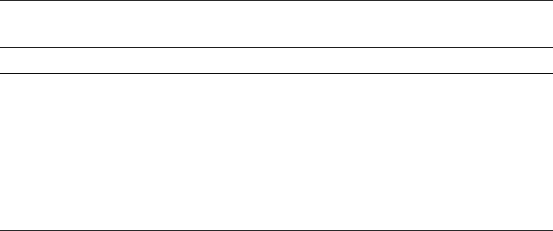
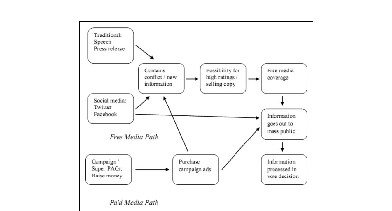
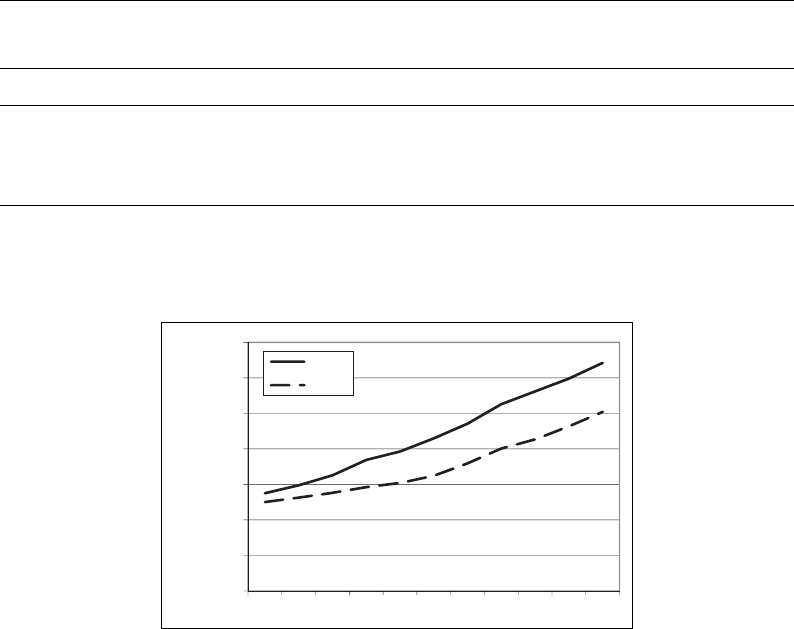

Article
Free Media and Twitter in
the 2016 Presidential Election:
The Unconventional Campaign
of Donald Trump
Peter L. Francia
1
Abstract
This article examines the surprising outcome of the 2016 presidential election, which saw Donald
Trump defy nearly all of the conventional wisdom to become the 45th president of the United
States. Political comm entators and experts offered several immediate postelection explanations
for Trump’s victory, one of which focused on how Trump was able to generate considerable
unpaid or free media for himself, often directly through Twitter. This article explains the theory
and rationale underlying the free media thesis (FMT) and then examines whether there is any
preliminary empir ical support for it. Using media tracking data and public opinion surveys, the
results reveal that Trump indeed dominated the unpaid media market. Although the findings in this
article cannot make causal claims about whether Trump’s advantages in free media are the prim ary
reason for his upset victory, the results, n onetheless, suggest that some of the basic conditions
necessary for the FMT were present in the 2016 election and that the FMT offers a plausible
avenue for further analysis and future research.
Keywords
social media, Twitter, Donald Trump, Hillary Clinton, presidential election
On June 16, 2015, speaking in New York City from his own Trump Tower on Fifth Avenue, Donald
Trump announced his candidacy for President of the United States. Trump, a real estate mogul and
billionaire celebrity with no previous elected political experience, entered the electoral arena as a
curiosity to most political observers. Perhaps known best to Americans for his fiery and bombastic
personality on the television programs, The Apprentice and The Celebrity Apprentice (which Trump
hosted from 2004 to 2015), and for his propensity to generate controversy with inflammatory
comments, many pundits and journalists initially dismissed Trump’s entry into the presidential race
as a publicity stunt rather than a serious effort to win the presidency. In the words of one commen-
tator shortly after his presidential announcement, “Donald Trump isn’t really running for president;
1
East Carolina University, Greenville, NC, USA
Corresponding Author:
Peter L. Francia, East Carolina University, Brewster A-124S, E. 10th Street, Greenville, NC 27858, USA.
Email: franciap@ecu.edu
Social Science Computer Review
1-16
ª The Author(s) 2017
Reprints and permission:
sagepub.com/journalsPermissions.nav
DOI: 10.1177/0894439317730302
journals.sagepub.com/home/ssc

he’s running to make more money and enhance a brand that’s bigger than his real-estate holdings
and golf courses” (Gasparino, 2015). Conservative commentator, Charles Krauthammer, went fur-
ther, referring to Trump as a “rodeo clown,” while op-ed writer, George Will, added that Trump
sounded like “the guy nursing his sixth beer at the end of a bar in Duluth” (quoted in Weaver, 2015).
Yet, roughly 17 months later, Trump’s presidential campaign had stunned his critics and doubt-
ers. Trump first defeated a crowded field of 16 Republicans to earn his party’s nomination. As the
political forecaster Nate Silver described the result in May of 2016, “If you’d told me a year ago that
Trump would be the nominee, I’d have though t you were nuts” (Silver, 2016). As the general
election approached, there were a few political scientists who accurately forecasted a Trump victory,
pointing to factors such as presidential approval ratings, the growth in real gross domestic product,
the length of time that the incumbent president’s party held the White House (i.e., one term or more
than one term), and primary results (Abramowitz, 2016; Norpoth, 2016). Predictions favoring
Trump, however, did not reflect the general consensus of most experts (Ceaser, Busch, & Pitney,
2017). Indeed, betting markets had the Democratic Party’s presidential nominee, Hillary Clinton, a
more than seven to one favorite on the eve of Election Day (RealClearPolitics, 2016).
Trump, however, defied the odds again, defeating Clinton to become the nation’s 45th president,
in what one newspaper headline referred to as a “cataclysmic, history-making upset” (Cillizza,
2016). In the immediate aftermath of the election, several postelection analyses attempted to make
sense of how Trump had won. One explanation centered on Trump’s ability to attract free media,
especially through his use of social media. As one headline read, “Donald Trump rode $5 billion in
free media to the White House” (Stewart, 2016). Social media, especially Twitter (140-character
social network), was often at the center of Trump’s ability to generate free media. Brad Parscale,
Trump’s digital director, commented after the election that Twitter was one of the “reasons we won
this thing” (quoted in Lapowsky, 2016). The purpose of this article is to examine these and similar
claims, or what is herein referred to as the free media thesis (FMT).
This article proceeds with some ba ckgr ound information about the 2016 presidential election.
I begin by discussing the conventional wisdom surrounding successful presidential campaigns
heading into th e 2016 e lec tion. This provides the necessar y context in whi ch to a sses s the u ncon -
ventional campaign of Donald Trump, in which generating free media exposure, rather than
relying on paid media, such as television advertising, was the primary vehicle to reach and
communicate with voter s.
As the results in this study show, Hillary Clinton held enormous advantages in fund-raising and
television advertising expenditures, but it was Trump who ultimately won more exposure in news
coverage and social media, which, in turn, seems to have also helped Trump dominate the personal
conversations that voters had with other people about the election. Although this article is unable to
make any definitive causal claims about whether Trump’s unorthodox campaign explains his vic-
tory, the results still suggest that some of the conditions necessary to support the FMT were present
in the presidential election of 2016. I conclude that Trump’s innovative use of social media and his
ability to generate free media from it could have far-reaching consequences in transforming the way
future candidates wage presidential campaigns.
Conventional Wisdom: The Invisible Primary and the
Republican Nomination
Winning the presidency first requires that a candidate win his or her party’s nomination. Before
voters cast any ballots in primary elections or participate in caucus elections, the so-called “invisible
primary” begins the nomination process, which involves fund-raising, building support in the polls,
and winning endorsements from prominent politicians. To raise money successfully, presidential
candidates must win over the large individual donors in their party (Malbin, 2009). During the early
2 Social Science Computer Review XX(X)

stages of the 2016 presidential election, for example, several Republican candidates made a
concerted effort to win the support of Charles and David Koch—a process that some members of
the press dubbed the “Koch primary” (see, e.g., Parker, 2015). In addition to these wealthy donors,
presidential candidates can also raise significant sums of money from Internet donors who
individually may only typically contribute modest amounts, but collectively total significant sums
(Wilcox, 2008).
Early fund-raising success, in p articular, is critical because it can generate favorable media
coverage, as the press reports on who is “winning” one of the first key tests of the invisible primary.
The result of such positive news coverage is that candidates often experience improved standing in
the polls. This is significant because major campaign donors typically want to back winners (Brown,
Powell, & Wilcox, 1995), and strong polling numbers in the early stages of the campaign help
candidates make the case that they are electable (Adkins & Dowdle, 2002; Goff, 2004). Taken
together, this process leads to what some political observers describe as a “virtuous cycle” in which
“fund-raising leads to good press coverage, which leads to better poll numbers, both of which are
shown to would-be contributors, leading to more money, to even better coverage and poll numbers,
and so on” (Halperin, Wilner, & Ambinder, 2006).
The invisible primary also involves another critical component—winning high-profile endorse-
ments. Since 1980, the single best predictor of winning a major party’s presidential nomination has
been the number of endorsements from party elites (Cohen, Karol, Noel, & Zaller, 2008; Vavrek,
2015). These high-level party endorsements send positive cues and signals to those who will later
vote in the primary and caucus elections (Cohen et al., 2008). As one account summarized, “Over the
past few decades, when these elites have reached a consensus on the best candidate, rank-and-file
voters have usually followed” (Bycoffe, 2016).
Endorsem ents also assist aspiring presidential candidates with their “ground game.” Interest
groups, in particular, can be especially helpful in registering new voters and in turning out voters
to the polls (see, e.g., Magleby, Monson, & Patterson, 2007). For Democrats, winning the support of
groups associated with civil rights, the environment, or organized labor can be critical to turning out
the vote needed for victory. For Republicans, winning endorsements from organizations that support
socially conservative causes, gun rights, or smaller government can be especially helpful to a
successful ground game. In the critical Iowa caucus, nearly all political professionals agree that
turning out the vote is essential to victory there. As one headline from 2016 declared, “Turnout is
Name of the Game in Iowa Caucuses” (Associated Press, 2016).
In short, money, support from high-ranking politicians and party leaders, endorsements from
interest groups representing key constituencies in a party, and a strong organization, especially on
the ground, are all mutually reinforcing. With this in mind, the conventional wisdom heading into
the 2016 election was that a successful presidential candidate could not survive the nomination
phase of the presidential election without the support of these established players (Cohen et al.,
2008). This presented what appeared to be a serious problem for Donald Trump’s campaign.
During the period of the invisible primary, tabulations from The New York Times showed that
Donald Trump had received not a single endorsement from a Republican governor or member of
Congress. B y comparison, former Florida governor, Jeb Bush, had received 30 endorsements
frommembersofCongressfollowedbySenatorMarcoRubioofFlorida,whohadwon27.Even
long-shot candidate and former governor of Arkansas, Mike Huckabee, who, at the time, stood
at se ve nt h in the po lls in Iowa (the s ta te that holds the first presidentia l caucus), and tenth in
the polls in New Hampshire (the state that holds the first presidential primary), had earned
an endorsement.
Trump also trailed behind his Republican rivals in early fund-raising totals. Including funds
raised by the candidate’s campaign and allied Super-Political Action Committees (PACs), Jeb Bush
again topped the Republican field, followed by Senators Ted Cruz of Texas and Rubio. Overall,
Francia 3

Trump ranked ninth in money raised,
1
placing him at or near the bottom in both the endorsement
derby and the money primary—two essential tests of the larger invisible primary (see Table 1).
Political prediction markets in August of 2015 were in line with the conventional wisdom about
the importance of the invisibl e primary, as Jeb Bush emerged a s the clear favorite to win the
Republican presidential nomination. PredictWise, which aggregates the probabilities from various
political prediction markets, had Bush leading all Republicans with a 40% chance of winning the
nomination. Oddsmakers, at the same time, gave Trump only a 14% probability of victory (Reuters,
2015). Over the next several months, as the race neared the Iowa caucus, Bush failed to gain any
traction in the polls. As the Bush campaign floundered, Marco Rubio emerged as the overwhelming
favorite, with PredictWise giving him a 56% chance of winning the Republican presidential nomi-
nation compared to 25% for Trump (New York Times, 2016). In sum, the most reliable predictors
coming out of the invisible primary, as well as the odds from prediction markets during the invisible
primary period, all suggested that Trump’s chances of winning the Republican presidential nomina-
tion were unlikely.
Yet, despite his low probability of victory, Trump would go on to win the Republican presidential
nomination. By the end of May 2016, Trump had surpassed the 1,237 delegate threshold required to
win the nomination. The result became official on July 19 at the Republican National Convention in
Cleveland. However, as the next section discusses, many political observers were again quick to
dismiss Trump’s chances as he entered the general election phase against Democratic nominee,
Hillary Clinton.
Conventional Wisdom: The General Election
In May, shortly after it became clear that Trump would be the Republican nominee, an article in
Salon boldly predicted that Trump, in his matchup against Clinton, was “more likely to lose in a
historic rout than he is to win the White House” (Gaughan, 2016). Likewise, a headline from Slate
confidently predicted, “Donald Trump Isn’t Going to be President” (Bouie, 2016). The chorus of
Trump doubters only grew over the months that followed, perhaps most dramatically illustrated by a
forecast from The Huffington Post’s polling team, which gave Clinton a 98% probability of defeat-
ing Trump (Jackson, 2016).
Several co mmon explanations emerged to support the prediction that Clinton would d efeat
Trump with relative ease. Some commentators observed that Trump’s surprising success in the
nomination phase would mean little in the general election given there were strong differences
Table 1. The Invisible Primary and the Initial Long Odds of the Trump Campaign.
Candidate Rank: National Endorsements Rank: Money Raised
Jeb Bush 1 1
Marco Rubio 2 3
Ted Cruz 3 2
Rand Paul 4 6
Chris Christie 5 8
Carly Fiorina 8 5
John Kasich 7 7
Ben Carson 10 4
Mike Huckabee 5 10
Donald Trump 10 9
Note. Rankings above reflect where candidates stood before the first votes were cast in the 2016 primary season.
Source. The New York Times (http://www.nytimes.com/interactive/2016/us/elections/presidential-candidates-dashboard.html).
4 Social Science Computer Review XX(X)

between Republican primary voters and the broader general electorate, most notably in the different
demographic makeup of both. The conventional wisdom held that Trump’s appeal—mainly to
working class, white men—was simply too narrow when put up against Clinton’s likely coalition
of minorities, college-educated white professionals, suburban women, and young voters (see, e.g.,
Bump, 2016; Byler, 2016; Fenn, 2016). Other commentators built on that argument by noting that
Trump’s narrow appeal would make it exceedingly difficult for him to expand and broaden the
Republican base, making it all but impossible for him to win in states where Mitt Romney, the 2012
Republican presidential nominee, had lost (Bouie, 2016). Moreover, Trump’s path to the minimum
270 votes needed for victory in the Electoral College, contained almost no room for error. Most
analysts agreed that Trump would need to come close to “running the table” in the competitive,
“swing” states that ultimately determine the winner of the presidential election (see, e.g., Catanese,
2016; Seitz-Wald, 2016).
Others pointed to basic campaign-related factors that seemed to spell doom for the T rump
campaign. Similar to arguments made during the nomination phase, experts pointed to the money
race. Although Trump ultimately poured some $66 million of his own cash to finance his campaign
and raised a total of $280 million from small donors (i.e., those who gave $200 or less), his overall
fund-raising total of $647 million was still a far cry from the $1.2 billion that Clinton and her allied
Super-PACs raised (Allison, Rojanasakul, Harris, & Sam, 2016). This large financial advantage
allowed Clinton to pour considerable sums of money into television advertising for her “air war” and
into get-out-the-vote operations for her “ground war.”
During the week beginning with Tuesday, October 18, for example, Clinton spent $29.6 million
on ads in battleground states compared to $14.9 million for Trump—a nearly two to one advantage
(Goldstein, McCormick, & Tartar, 2016). On the ground, Democrats had 5,138 staffers in 15 battle-
ground states for Clinton compared to the Republicans’ 1,409 staffers in 16 battleground states for
Trump (Wilson & Disipio, 2016). Citing both Clinton’s advantages on the airwaves and with her
ground organization, one account surmised just 11 days before Election Day, “Hillary Clinton will
be elected the 45th president of the United States” (Schlesinger, 2016).
Yet, on November 8, 2016, voters beat back the predictions of a certain Clinton victory. Although
Clinton would go on to win the national popular vote by nearly 3 million, Trump carried the key
battleground states of Ohio, North Carolina, and Florida. He also added three formerly Democratic
states to his column that no Republican nominee had won since 1988: Wisconsin, Michigan, and
Pennsylvania. When members of the Electoral College cast their votes a month later in December,
Trump had 304 votes to Clinton’s 227.
This stunning election result had many pundits confounded in the days and weeks afterward. How
did Trump pull off such an incredible upset? Among many explanations, a popular one deals with
Trump’s novel use of social media to generate unpaid media air time. In sections that follow, I
explain the rationale behind the FMT and then test several related hypotheses.
Trump’s Unconventional Campaign and the FMT
While conventional explanations offer little help in understanding how Trump was able to defy most
predictions, several postelection analyses have pointed to Trump’s use of social media as a factor in
his surprising victory (see, e.g., Khan, 2016; Le Miere, 2016; Yu, 2016). According to the argument,
or FMT, Trump’s use of social media, especially his frequent postings on Twitter, generated
significant news coverage. This unpaid or free media exposure allowed Trump to remain in the
public eye without requiring his campaign to spend millions of its own dollars on paid media such as
advertising. Moreover, social media provided a vehicle for Trump to communicate directly with the
public absent the usual filter of the mass media. Using social media in this fashion allowed Trump to
mitigate many of the disadvantages that pundits had pointed to earlier during the election, which had
Francia 5

suggested that Trump’s campaign was ill-equipped to take on his better-funded and better-organized
opponents in the Republican primaries and caucuses, and later Hillary Clinton in the general
election.
Of course, Trump did simply more than tweet. His Twitter posts were often deliberately designed
to entice journalists with controversial statements intended to provoke conflict with an opponent—a
strategy for generating free media that candidates have used in speeches and press releases well
before the dawn of social media (Arterton, 1984; Haynes, Flowers, & Gurian, 2002; Leighley, 2004;
Patterson, 1994). Indeed, journalists are often looking for colorful quotations to spice up their stories
and news outlets face commercial pressures to sell copy or generate ratings (Bennett, 2009; Patter-
son, 1994; Shea, 1996).
As just one example, Trump posted a tweet in February 2016, mocking Jeb Bush: “Wow, Jeb
Bush, whose campaign is a total disaster, had to bring in mommy to take a slap at me.” This
comment came shortly after Bush’s mother, forme r First Lady Barbara Bush , to ld CNN in an
interview that she was “sick of” of Trump. A fter Trump’s tweet, a USA Today headline read,
“Trump: Jeb Bush ‘had to bring in mommy to take a slap at me’” (Allen, 2015).
Once a candidate generates free media coverage and the information goes out to the mass public,
individual voters exposed to it must process the information. Of course, free media is not the only
way to reach a mass audience. Social media postings on Twitter or Facebook allow information to go
straight to the public. Candidates who can build a large social media following have the potential to
communicate information directly to an audience of millions. The same is also true for traditional
campaign advertising; however, social media has the advantage of eliminating the high costs that
come with traditional 30-second television ads (West, 2014). Ultimately, individual voters process
this campaign information (Lau & Redlawsk, 2006), which, in turn, can have a significant effect on a
voter’s evaluation of the candidates (Lodge, Steenbergen, & Brau, 1995). Figure 1 is a visual
diagram of how this process operates in theory.
Of c ourse, to test the basic validity of the FMT, anecdotes, such as the “bring in mommy”
episode, are insufficient. In addition, the FMT requires more than simply Trump’s ability to generate
headlines and media mentions for himself. The actions of Trump’s opponents also require consid-
eration. For instance, if Trump’s opponents also used social media similarly for equivalent amounts
of news coverage then it would be difficult to argue that social media played any role in Trump’s
Figure 1. Path of influence for free media and paid media on vote choice.
6 Social Science Computer Review XX(X)

surprising victory. In other words, absent a comparison, it would be impossible to know if Trump
had a net advantage in free media news coverage.
A report from the Harvard Kennedy School’s Shorenstein Center on Media, Politics, and Public
Policy found that Trump consistently received the most press attention during the nomination phase
of the election (Patterson, 2016a). The author of the report, Thomas Patterson (2016a), detailed the
media coverage of the various Republican candidates and noted:
There was not a single week when Ted Cruz, Marco Rubio, or John Kasich topped Trump’s level of
coverage. During the time that Rubio was an active candidate for the Republican nomination, he got only
half as much press attention as Trump.
Given that this previous research has already established Trump’s advantage in the nomination
phase of the election, this article focuses instead on the general election period. Based on the
expectations of the FMT, we would expect a similar news coverage advantage for Trump in the
general election, leading to our first hypothesis:
Hypothesis 1: Donald Trump generated more free media coverage, especially during the key
months of the election cycle, than did his chief opponent, Hillary Clinton.
Of course, social media is not solely dependent on press coverage to reach people. A Twitter post,
for example, can reach millions of people instantly independent of any third party facilitator. At the
time of the 2016 election, about 21% of all Americans reported using Twitter (Greenwood, Perrin, &
Duggan, 2016). Although this is only a minority of the population, Twitter users still constituted
millions of potential voters. More significantly, Twitter allows a presidential candidate to commu-
nicate directly to those users without any filter from the media. The larger the Twitter following, the
more people that the campaign can reach in this direct and unfiltered fashion. In theory, this would
give a candidate with more Twitter followers a social media advantage over a candidate with a
smaller number of Twitter followers. This leads to a second hypothesis that, if validated, lends
additional support for the FMT:
Hypothesis 2: Donald Trump had more followers on Twitter than Hillary Clinton, especially
during the key final months of the election cycle.
An additional p remise requires validation for there to be support for the FMT. Free media
exposure and more Twitter followers alone does not necessarily mean that more people actually
saw more social media posts about Trump than about Clinton. If the FMT is accurate, we would
expect the following third hypothesis to be confirmed:
Hypothesis 3: A higher percentage of people reported seeing more social media posts sup-
porting Donald Trump than Hillary Clinton.
The FMT further requires that not only did the news media provide greater free media coverage to
Trump, but that people actually reported seeing more news stories about Trump than about Clinton.
This leads to a fourth hypothesis:
Hypothesis 4: A higher percentage of people reported seeing more news stories about Donald
Trump than about Hillary Clinton.
All of this additional exposure for Trump also may have influenced the personal conversations
that people had about the election. This leads to a fifth hypothesis:
Francia 7
Hypothesis 5: A higher percentage of people reported that they spent more time talking about
Donald Trump in their personal conversations than about Hillary Clinton.
To be clear, support for all five hypotheses does not demonstrate causality. The causal mechan-
isms for Trump’s victory would require additional data and testing that are beyond the scope of this
article. Nonetheless, support for these five hypotheses lends some added empirical weight to the
FMT beyond mere speculation and anecdotal evidence.
Free Media Coverage
To examine whether Trump received more unpaid news coverage than Clinton, I rely on data from
MediaQuant, which tracks so-called “earned media” or content about a topic covered in newspapers,
magazines, broadcast and cable news, and other forums (for more information, see http://www.me
diaquant.net). To quantify free media exposure, MediaQuant computes a “media value” measure,
which is defined as the “monetized value” that one would put on an “earned media mention.” Put
another way, free media value is the approximate amount of money that candidates would be willing
to spend if they had to purchase the otherwise free news coverage and online discussions that they
generate. As MediaQuant explains, “If a source has 100,000 potential readers/listeners of a mention
(in an article, broadcast, blog post, tweet, forum post, etc.), then what are those 100,000 readers
worth?” (for more information on how the measure is computed, see http://www.mediaquant.net/
2016/09/its-not-advertising-value-its-media-value).
Using the MediaQuant measure of free media value, the results in Table 2 show the sum media
value totals for a 12-month period ending on November 1, 2016. Consistent with the expectations of
the FMT, Donald Trump had the highest free media value at $4.96 billion, far outdistancing Hillary
Clinton’s free media value total at $3.24 billion. For further comparison, Table 2 also includes the
free media totals for the 2012 presidential candidates, Barack Obama and Mitt Romney. As the
results show, neither candidate in 2012 came close to reaching Trump’s totals. Obama earned $1.15
billion in free media value over an equivalent 12-month period in 2012, whereas Romney generated
a free media value of roughly $700 million. This comparison reveals how truly extraordinary
Trump’s free media exposure was in the 2016 election.
To delve further into the numbers, Table 3 examines free media value over the last 5 months of
the 2016 election. Trump held a decisive advantage in June with more than $435 million in media
value compared to $299 million in media value for Clinton. While the totals ebbed and flowed from
month to month for both candidates, Trump led in every month from June through October, finishing
the final 5-month period of the election with more than $2.4 billion in free media value compared to
just over $2 billion in media value for Clinton. These patterns are also consistent using a separate
measure, the raw number of media mentions, shown in parentheses in Table 3. Quite clearly, Trump
dominated Clinton in unpaid media, significantly reducing the “air time” advantage that Clinton
held in paid advertising.
Table 2. 2016 and 2012 Presidential Election: Free Media Totals.
Candidate Free Media Value
Donald Trump (2016) $4,960,000,000
Hillary Clinton (2016) $3,240,000,000
Barack Obama (2012) $1,150,000,000
Mitt Romney (2012) $700,000,000
Note. For Trump and Clinton, totals reflect the 12-month period through November 1, 2016. The totals for Obama and
Romney reflect a comparable 12-month period in 2012.
8 Social Science Computer Review XX(X)

Social Media Followers
In January 2016, Donald Trump had 5.5 million Twitter followers compared to roughly 5 million for
Hillary Clinton. However, as the election progressed, Trump’s Twitter following grew as did his
advantage in Twitter followers over Clinton (see Figure 2). By Election Day, November 8, Trump’s
Twitter following had grown to 13 million compared to 10.3 million for Clinton—a net advantage of
2.7 million followers.
Aside from the raw number of Twitter followers favoring Trump, Twitter delivered the equiv-
alent of $402 million in free attention for Trump as compared to $166 million for Clinton based on
MediaQuant estimates. In the month of May alone, Trump generated nearly $195 million in free
media attention from Twitter compared to $23 million for Clinton (Stewart, 2016). Trump’s con-
troversial “taco bowl” tweet on Cinco de Mayo created the most discussion. In the tweet, Trump
posted a picture of himself eating a taco bowl at his Trump Tower desk with a posting that read,
“Happy #CincoDeMayo! The best taco bowls are made in Trump Tower Grill. I love Hispanics!”
(Tatum, 2016). Many of Trump’s opponents seized on the tweet, including a scathing attack from
comedian, Samantha Bee, who tweeted back, “The best taco bowls are made by immigrants who
resent a rich p—k calling them rapists. Love inauthentic Mexican!” (quoted in Mazza, 2016). Other
critics called the tweet “offensive” (Lombrozo, 2016). Trump aide, Paul Manafort, responded, “It
was a holiday for the Hispanic community, and I thought he [Trump] thought it was in the spirit of
the holiday” (quoted in Hensch, 2016). The controversy, whether one interpreted it positively or
negatively, corresponded with a spike in free media exposure for Trump.
Table 3. Donald Trump Versus Hillary Clinton: Media Value and Media Mentions, June–October 2016.
June 2016 July 2016 Aug. 2016 Sep. 2016 Oct. 2016 Total
Donald Trump $435,374,385
(71,029,693)
$543,712,760
(86,155,811)
$482,966,428
(70,124,397)
$459,976,733
(69,967,542)
$568,472,657
(73,802,984)
$2,490,502,963
(371,080,427)
Hillary Clinton $298,767,825
(40,576,744)
$505,324,483
(72,175,075)
$340,878,265
(45,320,187)
$418,339,706
(61,782,564)
$479,094,664
(60,378,488)
$2,042,404,943
(280,233,058)
Note. Media value is the monetized value of earned media attention. The numbers in parentheses reflect media mentions,
which are a tally of raw mentions from qualified media coverage.
Source. MediaQuant (https://www.mediaquant.net).
0
2000000
4000000
6000000
8000000
10000000
12000000
14000000
Jan Feb Mar Apr May Jun Jul Aug Sep Oct Nov
Trump
Clinton
Figure 2. Donald Trump versus Hillary Clinton: Twitter followers, 2016. The number of Twitter followers
was calculated using service provided by MediaQuant. Source. MediaQuant (https://www.mediaquant.net).
Francia 9
Finally, not only did Trump have more Twitter followers and more free media attention from
Twitter, he also outperformed Clinton in other social media platforms. Trump was the most Googled
candidate in the 2016 presidential election and received the most mentions of any candidate on
Facebook (Khan, 2016). In sum, by almost every measure available, Trump dominated Clinton in
the social media arena, lending further support to the FMT.
Voter Perceptions and Activities
While media value comparisons, as well as the number of social media followers and tweets
favoring Trump, offer one piece of the puzzle to support the FMT, a second important piece involves
what the voters themselves actually experienced and reported during the election. Table 4 reports
results using data from public opinion surveys conducted by YouGov (for more information, see
https://today.yougov.com/publicopinion/archive/). The surveys asked questions about what likely
voters reported seeing via television ads, social media, and in the news during the months of June
and August of the 2016 general election.
The first set of results in Table 4 confirms that Clinton held an advantage in the area where we
would most expect it: television advertising. In both Jun e and August, a significantly higher
Table 4. Reaching Voters through Advertising, Social Media, New Stories, and Personal Conversations, June
and August 2016
June August
Television advertising
Have seen more ads supporting Clinton 33% 47%
Have seen more ads supporting Trump 10 7
Have seen equal ads for Clinton and Trump 18 24
Have not seen ads for either candidate 31 15
Not sure 8 7
N 998 997
Social media posts
Have seen more posts supporting Clinton 15% 14%
Have seen more posts supporting Trump 19 22
Have seen equal posts for Clinton and Trump 19 21
Have not seen posts for either candidate 39 31
Not sure 9 12
N 997 996
News stories
Have seen more news stories about Clinton 12% 13%
Have seen more news stories about Trump 43 40
Have seen equal news stories for each candidate 35 38
Have not seen news stories for either candidate 5 3
Not sure 5 7
N 996 996
Personal conversations
Spent more time talking about Clinton 12% 13%
Spent more time talking about Trump 34 29
Spent equal time talking about each candidate 33 35
Have not talked about either candidate 16 18
Not sure 5 6
N 995 994
Source. YouGov Poll (2016).
10 Social Science Computer Review XX(X)

percentage of voters reported seeing television ads supporting Clinton than they did for Trump
(see Tabl e 4). In J un e, for exa mp le, 33% of respondent s reported that th ey saw mor e ads suppor t-
ing Clinton than they did for Trump compared to 10% who claimed they saw more ads supporting
Trump t ha n they did for Clin ton— a net advan tage of 23 percentage points f or Clinton. By August,
that net advantage had grown to 40 percentage points for Clinton (47%–7%). Even in a larger poll
conductedbyYouGovandThe Eco nomist (2016) in the critical mont h o f October, when television
ad buying is at its peak, Clinton’s net advantage remained considerable at 36 percentage p oints
(43–7%). These results confirm, as popular accounts of the election suggested, that Clinton
dominated Trump in paid media expos ure.
Yet, consistent with FMT expectations, this was not the case when it came to social media posts.
As Table 4 also shows, 19% of respondents reported that they saw more social media posts support-
ing Trump than Clinton in June as compared to 15% who reported they saw more social media posts
supporting Clinton than Trump—a net Trump advantage of 4 percentage points. That net advantage
for Trump grew to 8 percentage points by August (22–14%).
However, Trump’s most sizable exposure advantage over Clinton came in the form of news
stories. A full 43% of likely voters in June and another 40% in August reported that they saw more
news stories of Trump than they did about Clinton. By comparison, just 12% of likely voters in June
and 13% in August reported that they saw more news stories of Clinton than they did about Trump,
providing Trump with a net advantage of 31 percentage points and 27 percentage points in June and
August, respectively. Consistent with previous results and FMT expectations, Trump topped Clinton
in unpaid media exposure.
Finally, the results also show something quite telling: Trump was more often the topic of personal
conversations than Clinton. Among likely voters, 12% reported that they spent more time talking
about Hillary Clinton than about Donald Trump in June compared to 34% who reported that they
spent more time talking about Donald Trump than about Hillary Clinton. These percentages
remained largely unchanged in August, providing evidence for yet another condition consistent
with FMT expectations.
Additional Considerations
One impor tant issue not addressed to this point has been the tone of news coverage and social
media posts regarding Trump and Clinton. While Trump may have made up for any paid exposure
disadvanta ge s he face d in a dver tising with his unpaid exposure advantage over Clinton in free
news coverage, social media posts, and personal conversations, not all attention is necessarily
good attention. Indeed, much more of Trump’s free earned media was likely to be negative than
positive in t one (Patterson, 2016b) and was more likely to be negative than the free media
coverage that went to Clinton (Stewart, 2016). With that in mi nd, it seems plausible to argue that
Trump’s additi on al expo sure may not necessa rily h ave be en a positive for his c ampai gn, ef fec -
tively undermining t he FMT.
However, an important rebuttal to that point is worth consideration. Trump routinely made public
pronouncements to his supporters that were sharply critical of the journalists and the mass media,
calling reporters “dishonest” and “corrupt” throughout the election cycle (see, e.g., Zezima, 2016).
Whether these attacks against the media led to or merely reinforced preexisting attitudes, polling
data in October 2016 showed Trump supporters to be significantly less likely to trust established
news sources such as The New York Times, The Washington Post, and even the conservative-leaning
Wall Street Journal (The Economist/YouGov, 2016). Likewise, a mere 1% of Trump voters placed a
“great deal” of trust in the fact-checking of journalists and other experts compared to 39% of Clinton
supporters (see Table 5). Additionally, 77% of Trump supporters claimed to trust fact-checking by
journalists and experts “not much” or “not at all” compared to 11% of Clinton supporters. These
Francia 11
numbers provide good reason to believe that Trump supporters were very likely to dismiss any
negative news coverage about Trump. In such an environment, the old saying—“not all buzz is good
buzz”—may not have applied to the Trump campaign.
Conclusion
There was overwhelming consensus heading into and throughout the 2016 election that Donald
Trump had little chance of winning the White House. Trump, however, defied the odds, prompting
political observers in the immediate aftermath of the election to offer various explanations to
understand his surprising success. One of those explanations was Trump’s ability to generate free
news coverage, especially through his use of social media.
This article’s purpose was to examine this popular notion, presently coined the FMT, by moving
beyond the anecdotal evidence and by instead bringing together the available empirical evidence
related to the FMT. The results make clear that Trump did receive more free news coverage than
Clinton as measured by free media value and media mentions, he had more Twitter followers, and
more people reported seeing posts about Trump on social media and in the news. Of course, as
already noted, the results in this article do not demonstrate a causal relationship between Trump’s
unpaid media advantage and his victory in the election. The results, however, do provide some initial
empirical grounding for future research to investigate the FMT further.
Certainly, it is not unreasonable to speculate that future presidential candidates may look to
emulate the social media tactics of the Trump campaign. After all, using social media to generate
controversy, and the subsequent unpaid news coverage that follows, is mutually beneficial to both
the candidate and the media. The candidate, of course, gets free exposure to a mass audience. The
media, in turn, generate ratings and profits. CNN and Fox News, for example, reported record profits
in 2016, undoubtedly in no small part due to Trump’s campaign (Stewart, 2016). With such incen-
tives, Trump’s campaign may have done more than shock the world with his victory. His use of
social media and his ability to generate free media may end up changing the way future presidential
campaigns are conducted in the years to come.
Declaration of Conflicting Interests
The author(s) declared no potential conflicts of interest with respect to the research, authorship, and/or pub-
lication of this article.
Funding
The author(s) received no financial support for the research, authorship, and/or publication of this article.
Table 5. Trustworthiness of Fact Checking by Journalists and Experts.
Trump Voters (%) Clinton Voters (%)
A great deal 1 39
A moderate amount 22 50
Not much 54 8
Not at all 23 3
N 342 476
Note. Differences between Trump and Clinton voters are statistically significant at p < .01 using w
2
tests.
Source. The Economist/YouGov Poll (2016).
12 Social Science Computer Review XX(X)

Note
1. Trump did announce that he would self-fund much of his campaign, which may explain his relatively low
standing in fund-raising. However, some reports questioned the veracity of Trump’s self-funding claims
(see, e.g., Schreckinger, 2015).
References
Abramowitz, A. I. (2016). Will time for change mean time for Trump? PS: Political Science & Politics, 49,
659–660.
Adkins, R. E., & Dowdle, A. J. (2002). The money primary: What influences the outcome of pre-primary
presidential nomination fundraising? Presidential Studies Quarterly, 32, 256–275.
Allen, C. (2015, February 6). Trump: Jeb Bush ‘had to bring in mommy to take a slap at me’. USA Today.
Retrieved from http://www.usatoday.com/story/news/politics/onpolitics/2016/02/06/jeb-bush-don ald-
trump/79922352
Allison, B., Rojanasakul, M., Harris, B., & Sam, C. (2016, December 9). Tracking the 2016 presidential money
race. Bloomberg. Retrieved from https://www.bloomberg.com/politics/graphics/2016-presidential-cam
paign-fundraising
Arterton, F. C. (1984). Media politics: The news strategies of presidential campaigns. Lexington, MA: Heath.
Associated Press. (2016, January 31). Turnout is name of the game in Iowa caucuses. Fox News. Retrieved from
http://www.foxnews.com/politics/2016/01/31/turnout-is-name-game-in-iowa-caucuses.html
Bennett, W. L. (2009). News: The politics of illusion (9th ed.). Chicago, IL: University of Chicago Press.
Bouie, J. (2016, May 4). Donald Trump isn’t going to be president. Slate. Retrieved from http://www.slate.com/
articles/news_and_politics/politics/2016/05/donald_trump_isn_t_going_to_be_president.html
Brown, C. W., Powell, L. W., & Wilcox, C. (1995). Serious money: Fundraising and contributing in presi-
dential nomination campaigns. New York, NY: Cambridge University Press.
Bump, P. (2016, July 7). With nearly every demographic, Hillary Clinton is outperforming Barack Obama in
2012. The Washington Post. Retrieved from https://www.washingtonpost.com/news/the-fix/wp/2016/07/07/
with-nearly-every-demographic-hillary-clinton-is-outperforming-barack-obama-in-2012
Bycoffe, A. (2016, June 7). The endorsement primary. FiveThirtyEight. Retrieved from https://projects.fivethir
tyeight.com/2016-endorsement-primary
Byler, D. (2016, March 28). Will demographics sink Donald Trump? RealClear Politics. Retrieved from http://
www.realclearpolitics.com/articles/2016/03/28/will_demographics_sink_donald_trump_130095.html
Catanese, D. (2016, September 15). Donald Trump’s electoral map to victory. U.S. News & World Report.
Retrieved from http://www.usnews.com/news/articles/2016-09-15/donald-trumps-electoral-map-to-victory
Ceaser, J. W., Busch, A. E., & Pitney, J. J. (2017). Defying the odds: The 2016 elections and American politics.
Lanham, MD: Rowman & Littlefield.
Cillizza, C. (2016, November 9). President-elect Donald Trump’s cataclysmic, his tory-making upset. The
Washington Post. Retrieved from https://www.washingtonpost.com/news/the-fix/wp/2016/11/09/how-
donald-trump-pulled-off-an-upset-of-cataclysmic-historic-proportions/? utm_term¼.253195490182.
Cohen, M., Karol, D., Noel, H., & Zaller, J. (2008). The party decides: Presidential nominations before and
after reform. Chicago, IL: University of Chicago Press.
Fenn, P. (2016, March 21). Why Trump won’t win. U.S. News & World Report. Retrieved from http://www.
usnews.com/opinion/blogs/peter-fenn/articles/2016-03-21/trump-has-deep-demographic-problems-come-
the-2016-general-election
Gasparino, C. (2015, June 22). Trump’s running—But the joke’s on you.” The Daily Beast. Retrieved from
http://www.thedailybeast.com/articles/2015/06/22/how-much-is-trump-is-really-worth.html
Gaughan, A. (2016, May 5). Donald Trump will not be president: History, polling data and demographics all
point to a single result. Salon. Retrieved from http://www.salon.com/2016/05/05/donald_trump_will_not_
be_president_history_polling_data_and_demographics_all_point_to_a_single_result_partner
Francia 13

Greenwood, S., Perrin, A., & Duggan, M. (2016, November 11). Social media update. Pew Research Center.
Retrieved from http://www.pewinternet.org/2016/11/11/social-media-update-2016
Goff, M. J. (2004). The money primary: The new politics of the early presidential nomination process. Lanham,
MD: Rowman & Littlefield.
Goldstein, K., McCormick, J., & Tartar, A. (2016, November 2). Candidates make last ditch ad spending push
across 14-state electoral map. Bloomberg. Retrieved from https://www.bloomberg.com/politics/graphics/
2016-presidential-campaign-tv-ads
Halperin, M., Wilner, E., & Ambinder, M. (2006, January 6). How we do what we do. ABC News. Retrieved
from http://abcnews.go.com/Politics/story? id¼121064
Haynes, A. A., Flowers, J. F., & Gurian, P. H. (2002). Getting the message out early: Candidate strategy and the
invisible primary. Political Research Quarterly, 55, 633–652.
Hensch, M. (2016, May 6). Trump aide: Taco tweet meant ‘in the spirit’ of Cinco de Mayo. The Hill. Retrieved
from http://thehill.com/blogs/ballot-box/presidential-races/279016-trump-adviser-taco-tweet-meant-in-
spirit-of-cinco-de-mayo
Harris, M. (N ovember 14, 2016). A media post-mortem on the 2016 presidential electi on. MediaQuant.
Retrieved from http://www.mediaquant.net/2016/11/a-medi a-post-mortem-on-the-2016-presidential-
election
Jackson, N. (2016, November 7). HuffPost forecasts Hillary Clinton will win 323 electoral votes. Huffington
Post. Retrieved from http://www.huffingtonpost.com/entry/polls-hillary-clinton-win_us_
5821074ce4b0e80b02cc2a94
Khan, L. (2016, November 15). Trump won thanks to social media. The Hill. Retrieved from http://thehill.com/
blogs/pundits-blog/technology/306175-trump-won-thanks-to-social-media
Lapowsky, I. (2016, November 15). Here’s how Facebook actually won Trump the presidency. Wired.
Retrieved from https://www.wired.com/2016/11/facebook-won-trump-election-not-just-fake-news
Lau, R. R., & Redlawsk, D. P. (2006). How voters decide: Information processing in election campaigns. New
York, NY: Cambridge University Press.
Leighley, J. E. (2004). Mass media and politics: A social science perspective. Boston, MA: Houghton Mifflin
Harcourt.
Le Miere, J. (2016, November 9) . Did the media help Donald Trump win? International Business Times.
Retrieved from http://www.ibti mes.com/did-media- help-donald-trump-win-5-billion-free-advertising-
given-president-elect-2444115
Lodge, M., Steenbergen, M. R., & Brau, S. (1995). The responsive voter: Campaign information and the
dynamics of candidate evaluation. American Political Science Review, 89, 309–326.
Lombrozo, T. (2016, May 9). The deeper reason Trump’s taco tweet is offensive. NPR. Retrieved from http://
www.npr.org/sections/13.7/2016/05/09/477260158/the-deeper-reason-trump-s-taco-tweet-is-offensive
Magleby, D. B., Monson, J. Q., & Patterson, K. D. (Eds.) (2007). Dancing without partners: How candidates,
parties, and interest groups interact in the presidential campaign. Lanham, MD: Rowman & Littlefield.
Malbin, M. J. (2009, April). Small donors, large donors and the Internet. Campaign Finance Institute. Retrieved
from http://pmef.org/reports/2009/others/2009-4cfi-case4pubfinafterobama.pdf
Mazza, E. (2016, May 6). Donald Trump’s taco bowl hilariously backfires. The Huffington Post. Retrieved from
http://www.huffingtonpost.com/entry/donald-trump-taco-bowl_us_572bf20be4b096e9f090e1c5
New York Times. (2016, February 2). Who’s winning the presidential campaign? The New York Times.
Retrieved from ht tp://www.nytimes.com/interactive/2016/us/elections/presidential-c andidates-dashboard.
html
Norpoth, H. (2016). Primary model predicts Trump victory. PS: Political Science & Politics, 49, 655–658.
Parker, A. (2015, January 20). ‘Koch primary’ tests hopefuls in the G.O.P. The New York Times. Retrieved from
https://www.nytimes.com/2015/01/21/us/koch-seminar-is-early-proving-ground-for-gop-hopefuls.html
Patterson, T. E. (1994). Out of order: An incisive and boldly original critique of the new media’s domination of
America’s political process. New York, NY: Vintage Books.
14 Social Science Computer Review XX(X)
Patterson, T. E. (2016a, July 11). News coverage of the 2016 presidential primaries: Horse race reporting has
consequences. Harvard Kennedy School Shorenstein Center on Media, Politics, and Public Policy.
Retrieved from https://shorensteincenter.org/news-coverage-2016-presidential-primaries
Patterson, T. E. (2016b, July 11). News coverage of the 2016 national conventions: Negative news, lacking
context. Harvard Kennedy School Shorenstein Center on Media, Politics, and Public Policy. Retrieved from
https://shorensteincenter.org/news-coverage-2016-national-conventions
RealClearPolitics. (2016, November 7). U.S. presidential election—Bet ting odds. RealClearPolitics.
Retrieved from http://www.realclearpolitics.com/epolls/writeup/us_presidential_election_live_betting_
odds.html
Reuters. (2015, August 26). Prediction markets: Jeb Bush likely to beat Donald Trump for 2016 Republican
nomination. Newsweek. Retrieved from http://www.newsweek.com/jeb-bush-donald-trump-prediction-mar
kets-polls-366122
Schlesinger, R. (2016, October 28). Done deal. U.S. News & World Report. Retrieved from http://www.usnews.
com/opinion/thomas-jefferson-street/articles/2016-10-28/7-reasons-why-hillary-clintons-win-over-donald-
trump-is-a-done-deal
Schreckinger, B. (2015, October 15). Trump not exactly self-funding his campaign. Politico. Retrieved from
http://www.politico.com/story/2015/10/donald-trump-fec-fundraising-214838
Seitz-Wald, A. (2016, May 5). Donald trump’s ugly electoral map. MSNBC. Retrieved from http://www.msnbc.
com/msnbc/donald-trumps-ugly-electoral-map
Shea, D. M. (1996). Campaign craft: The strategies, tactics and the art of political campaign manipulation.
Westport, CT: Praeger.
Silver, N. (2016, May 4). Why Republican voters decided on Trump. FiveThirtyEight. Retrieved from http://
fivethirtyeight.com/features/why-republican-voters-decided-on-trump
Stewart, E. (2016, November 20). Donald Trump rode $5 billion in free media to the White House. The Street.
Retrieved from https:// www.thestreet. com/story/13896916/1/donald-trump-rode -5-bi llion-in-free-media-
to-the-white-house.html
Tatum, S. (2016, May 6). Pictured with taco bowl, Trump proclaims, “I love Hispanics!” CNN. Retrieved from
http://www.cnn.com/2016/05/05/politics/donald-trump-taco-bowl-cinco-de-mayo/
The Economist/YouGov Poll. (October 7– 8, 2016). Latest findings politics. Retrieved from https://
d25d2506sfb94s.cloudfront.net/cumulus_uploads/document/3eyveosiyg/econTabReport.pdfThe Econo
mist/YouGov Poll. (October 15–18, 2016). Latest findings politics, Retrieved from https://
d25d2506sfb94s.cloudfront.net/cumulus_uploads/document/3eyveosiyg/econTabReport.pdf
Vavrek, L. (2015, July 29). 2016 endorsements: How and why they matter. The New York Times. Retrieved
from http://www.nytimes.com/2015/07/30/upshot/2016-endorsements-how-and-why-they-matter.html
Weaver, A. (2015, July 6). ‘Not serious politics’: Krauthammer dismisses ‘rodeo clown’ Donald Trump. The
Daily Cal ler. Retrieved from http://dailycaller.com/2015/07/06/not-serious-politics-krauthammer-dis
misses-rodeo-clown-donald-trump
West, D. M. (2014). Air wars: Television advertising and social media in election campaigns 1952–2012 (6th
ed.). Thousand Oaks, CA: Sage.
Wilcox, C. (2008). Internet fundraising in 2008: A new model? The Forum, 6, 1–13.
Wilson, R., & Disipio, J. (2016, October 22). Clinton holds huge ground game advantage over Team Trump.
The Hill. Retrieved from http://thehill.com/campaign/302231-clinton-holds-huge-ground-game-advantage-
over-team-trump
Yu, R. (2016, November 9). How do you use the media to win? Just ask Donald Trump. USA Today. Retrieved
from http://www.usatoday.com/story/money/2016/11/09/trump-p resident ial-victory-lesson-how-use-
media-win/93552638
Zezima, K. (2016, August 14). Trump’s campaign continues to blame ‘disgusting and corrupt’ media. The
Washington Post. Retrieved from https://www.washingtonpost.com/news/post-politics/wp/2016/08/14/
trumps-campaign-continues-to-blame-disgusting-and-corrupt-media
Francia 15

Author Biography
Peter L. Francia is a professor of political science a nd Director of the Center for Survey Research at East
Carolina University. He is the author of several academic publications on the subjects of campaign finance,
interest groups, public opinion, and American elections. His major works include The Financiers of Con-
gressional Elections: Investors, Ideologues, and Intimates (2003), coauthored with John C. Green, Paul S.
Herrnson, Lynda W. Powell, and Clyde Wilcox; The Future of Organized Labor in American Politics (2006);
Guide to Interest Groups and Lobbying in the United S tates (2012), coedited with Burdett A. Loomis and
Dara Z. Strolovitch; and three editions of Conve ntional Wisdom and American Elections: Explod ing Myths,
Exploring Misconceptions (2008, 2010, and 2016), coauthored with Jody C. Baumgartner. He may be
contacted at fr anciap@ ecu.edu
16 Social Science Computer Review XX(X)